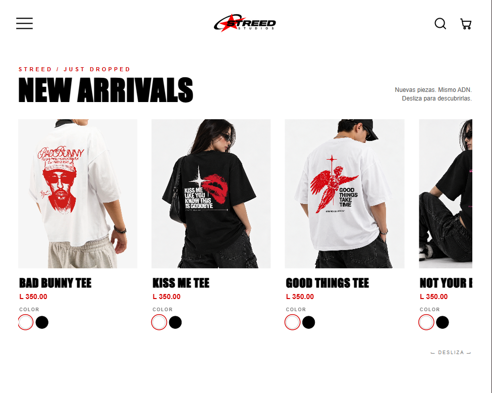

Diseño de interfaz
Jerarquía visual, estructura, tipografía y composición para que el mensaje sea claro y la marca tenga una presencia propia.
Diseñamos y construimos experiencias digitales que hacen que una buena idea se entienda, se recuerde y se sienta distinta.
Una identidad visual hecha para destacar.
La idea detrás del código
Una web es parte de cómo una marca se presenta al mundo. Por eso trabajamos la estructura, el diseño y cada interacción como piezas de una misma idea.
Así trabajamosLo que hacemosDiseño y frontend pensados en conjunto, desde la primera impresión hasta el último clic.
Jerarquía visual, estructura, tipografía y composición para que el mensaje sea claro y la marca tenga una presencia propia.
La parte visible y funcional de tu web, construida con HTML, CSS y JavaScript a partir del diseño y alcance definidos.
Animaciones con propósito, navegación intuitiva y una experiencia cuidada en móvil, tablet y escritorio.
Trabajo seleccionadoDos proyectos, dos necesidades diferentes. Una misma obsesión por hacer que la experiencia tenga sentido.


Claridad desde el inicioUn buen proyecto no solo se ve bien: también tiene límites claros, entregables definidos y una ruta de trabajo compartida.
Definir el alcanceUna propuesta visual alineada con la identidad, el mensaje y los objetivos del proyecto.
Maquetación e interacciones con HTML, CSS y JavaScript según el alcance acordado.
Adaptación a móvil, tablet y escritorio con atención a la navegación y legibilidad.
Archivos del proyecto y recursos preparados para publicarse en el alojamiento correspondiente.
El procesoUn recorrido colaborativo, con decisiones claras y sin hacerte adivinar qué viene después.
Entendemos tu marca, tus objetivos, tu público y qué necesita resolver la web.
Acordamos estructura, dirección visual, contenido, funciones y entregables.
Desarrollamos la interfaz y revisamos su comportamiento en diferentes pantallas.
Revisamos el resultado frente al alcance acordado y dejamos listo el proyecto para su publicación.
El siguiente pasoCuéntanos qué tienes en mente. Cada proyecto se cotiza a medida según su alcance, sus necesidades y lo que quieres conseguir.